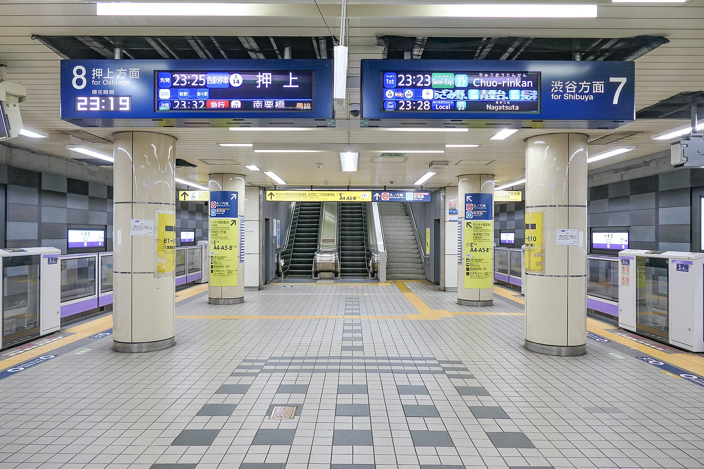
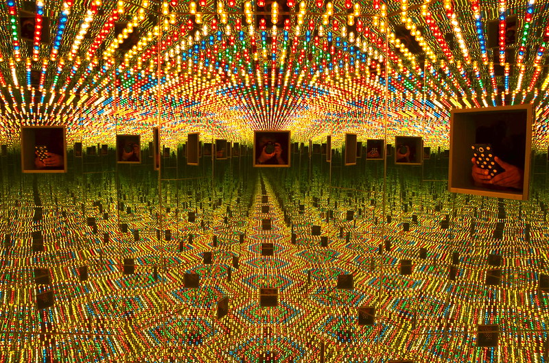
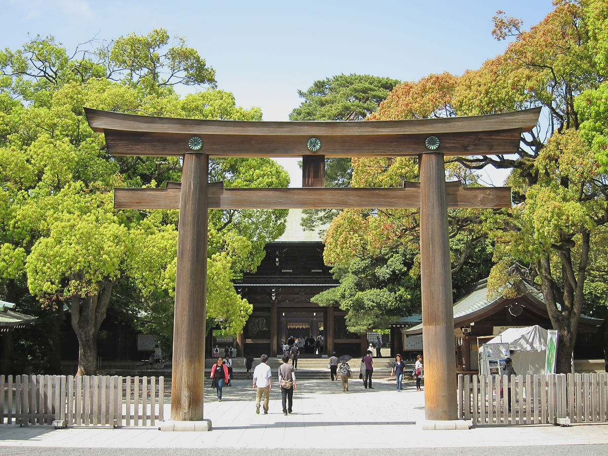
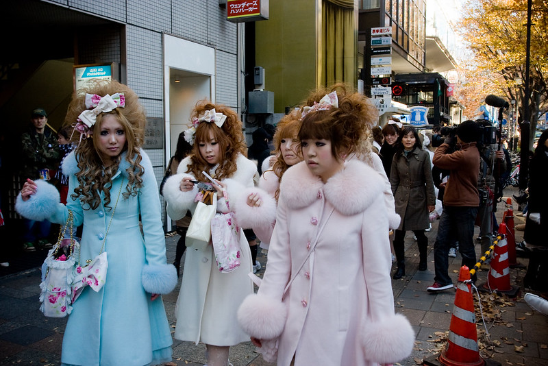
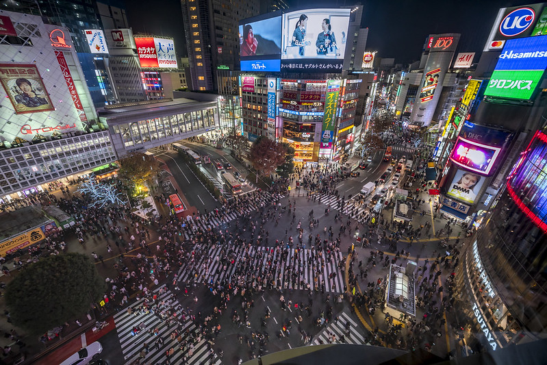
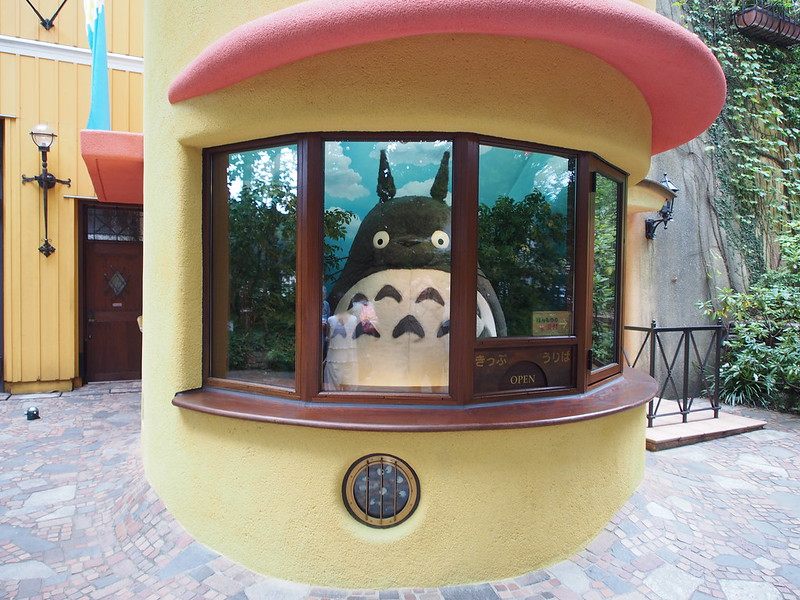
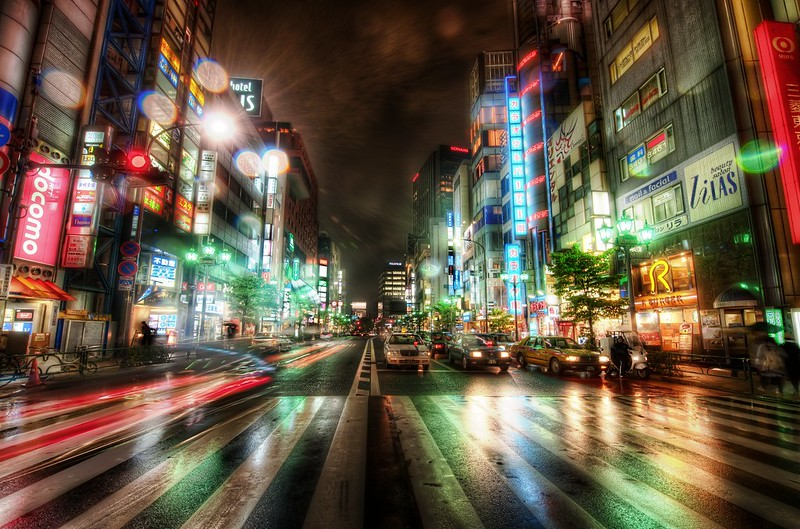

TOKYO CLICKS
Welcome to my blog where I'll be sharing photos of Tokyo and stories of my visits.
There'll be reviews of museums and exhibitions, along with general information on getting around this amazing city.

Riding the Tokyo Metro

My internet friend Victoria is visiting Tokyo next month and she asked if I could write a blog post about using the Metro. So the most important thing to know is that Tokyo has an extensive and efficient public transportation system. While there are many bus and railway companies, the core of the system is the Tokyo Metro. It's a clean, orderly and safe place to get around.
There are two types of tickets: single journey tickets and rechargeable smart cards. The smart cards can be used on all Tokyo Metro lines, as well as some other transport systems within the city. If you're planning on using public transport a lot during your visit, I would recommend getting a card. You can also get a 1-day or 2-day pass which gives you unlimited travel on all Tokyo Metro lines for the duration of the pass.
To use the smart card, you just need to hold it against the reader at the ticket gate and it will deduct the fare from your card. For single journey tickets, you need to insert the ticket into the slot at the ticket gate and it will be returned to you so you can keep it as proof of payment.
The fare depends on how far you're travelling and which fare zone you're in. There are 8 zones in total, with Zone 1 being the centre of Tokyo and Zone 8 being the outer suburbs. The fare for a single journey ranges from 160 yen to 310 yen.
If you need help working out the fare or how to get to your destination, there are touch screen kiosks in every station where you can input your starting point and destination. It will give you a list of routes and the fare for each one. The staff at the ticket gates are also always happy to help.
Tokyo Metro runs from 5am until midnight every day. The frequency of trains varies depending on the line and time of day, but generally there is a train every few minutes.
And that's all you need to know about using the Tokyo Metro! It's a really easy system to use and it will get you around the city with ease.
Yayoi Kusama Museum

The Yayoi Kusama Museum is a must-see for any fan of the Japanese artist. The museum is small but packed with a huge collection of her work, from early sketches to more recent installations. Even if you're not familiar with her work, it's worth a visit just to see the incredible range of media and styles she's worked in. The staff are also very friendly and helpful, providing plenty of information about Kusama and her work.
I visited in October last year and saw the exhibition "All the Eternal Love I Have for the Pumpkins". It was spectacular, with giant inflatable pumpkins dotting the museum's grounds, and a light show inside the museum itself. If you have the chance to visit, I highly recommend it!
Maggie and I went with some friends who were in town, and their favourite part was apparently the gift shop! You can buy all sorts of Kusama-themed merchandise, from notebooks to umbrellas. We all left with a few souvenirs to remind us of our visit.
Overall, the Yayoi Kusama Museum is a fun, interesting place to visit, and definitely worth a trip if you're in Tokyo.
Meiji Shrine

Meiji Shrine aka Meiji Jingū will most certainly be on your list of 'must see' things in Tokyo. The shrine is perfect for visitors, as it is situated in a large park, providing a lovely green setting in the heart of Tokyo. It is located west of Shibuya, adjacent to Harajuku station along the Yamanote line.
As you walk through the pathways to the shrine you will notice many large wooden torii gates. These are donated by businesses and individuals and there are over 100 spread out through the park. Depending on how many people are visiting, the pathway can be quite crowded with people stopping to take photos of the shrine and themselves in front of the torii gates.
The shrine is dedicated to Emperor Meiji (1852-1912) and his consort, Empress Shoken (1849-1914). The Meiji Period was a time of great change in Japan. After years of isolation, the country opened up to the world and started to rapidly modernize. This was a time when Japan began to establish itself as a major power on the international stage.
The shrine itself is quite plain and austere in design. It is built in the traditional style of Japan's Shinto shrines. After passing through the main gate, you will see the main hall (honden) where the Meiji Emperor and Empress are enshrined. In front of the honden is a large courtyard where ceremonies are sometimes held.
To the left of the honden is a museum which houses some of the personal belongings of the Emperor and Empress. There is also a display on the history of the Meiji Period.
The shrine grounds are beautifully kept and there are many trees, plants and gardens to enjoy. There is also a large pond where you can often see people feeding the carp.
If you are visiting Tokyo during the New Year holidays, Meiji Shrine is definitely worth a visit.
Harajuku

If you love the vibrant, cutesy side of contemporary Japanese culture, Harajuku is a must visit on your Tokyo trip. The area is most commonly associated with the Lolita style, which is a subculture within Japanese fashion featuring billowing skirts, lace and petticoats.
But Harajuku has more to offer than just fashion. Take a stroll down Takeshita Dori, the main shopping street, and you'll find all kinds of shops selling everything from clothes and accessories to crepes and souvenirs.
If you're interested in Japanese pop culture, then make sure to check out the 2-D Cafe, which is dedicated to all things manga and anime. There's also the Cat Cafe Calico, where you can drink coffee and play with cats.
And if you want to experience something truly unique, head to the Robot Restaurant. This high-tech cabaret show features giant robots, dancers in colourful costumes and plenty of lasers and lights. It's an unforgettable experience!
Shibuya Crossing

Shibuya Crossing is famous for being the world's busiest crosswalk ウィキペディア. Located in the Shibuya ward of Tokyo, the crossing is adjacent to the Hachiko exit of Shibuya Station and sees an estimated 2,500 to 3,000 people crossing at a time.
The Crossing has been immortalized in pop culture, appearing in films such as Lost in Translation and The Fast and the Furious: Tokyo Drift.
My insider tip for watching the hustle and bustle of the crossing is icanhazfries' suggestion to head to the 2nd floor of the Starbucks across the street. You can get a good view of the crossing from there, plus a coffee to sip on while you people watch.
The Ghibli Museum

It's no Disneyland, but fans of the movies will love this museum about all things Studio Ghibli. The building itself, based on a design by director Hayao Miyazaki, is something out of a movie. Inside, you can learn all about the history of Studio Ghibli, see some of the original artwork used in the movies, and even watch a short film made just for the museum. There's also a cafe and a shop selling exclusive Ghibli merchandise.
 Fans of My Neighbour Totoro will want to check out the life-sized replica of the Catbus, and there's also a nifty faux-grass hill you can sit on and watch the clouds go by.
Fans of My Neighbour Totoro will want to check out the life-sized replica of the Catbus, and there's also a nifty faux-grass hill you can sit on and watch the clouds go by.
The Ghibli Museum is located in Mitaka, a suburb of Tokyo. The easiest way to get there is by taking the JR Chuo Line from Shinjuku Station to Mitaka Station. The journey takes about 20 minutes and costs 160 yen. From Mitaka Station, it's about a 10-minute walk to the museum.
Admission to the Ghibli Museum is by advance ticket only. Tickets can be purchased through a lottery system on the museum's website, or from Lawson convenience stores in Japan. The tickets cost 1000 yen for adults and 700 yen for children, and they must be used on the date specified.
I visited the Ghibli Museum soon after moving to Tokyo and most enjoyed eating at the on-site cafe, which has a Totoro -themed menu. The soba noodles with soup were delicious, and of course I had to try the Totoro -shaped riceballs!
If you love Ghibli movies, then the Ghibli Museum is a must-visit. Just be sure to buy your tickets in advance!
Where to stay in Tokyo

Shinjuku
Arguably the most famous and popular district in Tokyo, Shinjuku is known as the city's busiest transport hub, business and shopping district.
The area around Shinjuku station is particularly hectic, with hordes of salarymen rushing to and from work and hundreds of shops and department stores catering to their every need.
But this hyper-efficient commercial centre is not all there is to Shinjuku. The western side of the station is home to the Shinjuku Gyoen National Garden, one of Tokyo's largest and most beautiful parks. This is a great place to escape the hustle and bustle of the city for a few hours.
On the eastern side of the station, you'll find the vibrant district of Kabukicho. This is Tokyo's red light district, but don't let that dissuade you – it's also one of the best places in the city for nightlife and entertainment.
There are countless bars, clubs, karaoke joints, restaurants and more to keep you occupied far into the night. Just be sure to stay safe and beware of scams.
If you're looking for a central location that has something for everyone, Shinjuku is the perfect place to stay.
Shinjuku also has great transport connections, making it easy to get around Tokyo.
Shibuya
Shibuya is the quintessential Tokyo district. It's home to the world-famous Shibuya crossing, as well as trendy fashion stores, hipster cafes and nightclubs.
This is the go-to district for young people in Tokyo and it's easy to see why. The streets are lined with trendy fashion stores and the nightlife is some of the best in the city.
The main downside of Shibuya is that accommodation can be quite expensive. But if you're willing to pay a bit extra, you'll be perfectly located for exploring all that Tokyo has to offer.
Roppongi
Roppongi is known as the foreigner district of Tokyo. It's here that you'll find many of the city's best international restaurants and bars, as well as a large expat community.
Roppongi is also home to some of Tokyo's best nightlife, with countless bars, clubs and rooftop bars to keep you entertained into the early hours of the morning.
The downside of Roppongi is that it can be quite expensive, both in terms of accommodation and nights out. But if you're looking for a buzzing district with great nightlife, it's well worth a visit.
Asakusa
Asakusa is one of Tokyo's most traditional districts. It's home to the famous Senso-ji temple, as well as countless quaint shops and restaurants.
If you're looking for a more traditional side to Tokyo, Asakusa is the perfect place to stay. The downside is that it can be quite touristy and accommodation can be quite expensive.
Akihabara
Akihabara is known as Tokyo's geek district. It's here that you'll find countless electronic stores, anime and manga shops, and cosplay cafes.
If you're into gaming, anime or Japanese pop culture, Akihabara is the perfect place to stay. The downside is that it can be quite expensive and it's not the most central district in Tokyo.
Sumida
Sumida is a traditionally working-class district that's in the process of being gentrified. It's home to the famous Tokyo Skytree, as well as many traditional shops and restaurants.
If you're looking for a more authentic Japanese experience, Sumida is the perfect place to stay. The downside is that it's not the most central district and accommodation can be quite expensive.
The Bottom Line
Tokyo is an amazing city with something for everyone. Where you stay will depend on your budget, interests and what you're looking for from your trip.
If you're looking for a central location with great transport links, Shinjuku is the perfect place to stay. If you're looking for a more traditional Japanese experience, Asakusa or Sumida are great options. And if you're into gaming, anime or Japanese pop culture, Akihabara is the place for you.